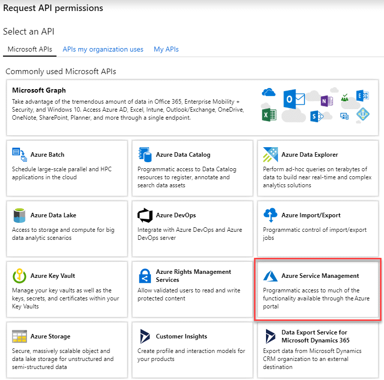
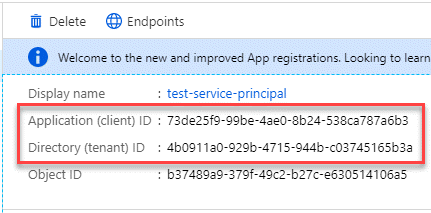

릴리스 정보
릴리스 정보
Azure Marketplace에서 Connector를 생성합니다
 변경 제안
변경 제안
Azure 마켓플레이스에서 Connector를 만들려면 네트워킹을 설정하고 Azure 권한을 준비하고 인스턴스 요구 사항을 검토한 다음 Connector를 만들어야 합니다.
을(를) 검토해야 합니다 "커넥터 제한".
단계 1: 네트워킹을 설정한다
커넥터를 설치할 네트워크 위치가 다음 요구 사항을 지원하는지 확인합니다. 이러한 요구사항을 충족하면 Connector가 하이브리드 클라우드 환경 내에서 리소스와 프로세스를 관리할 수 있습니다.
- Azure 지역
-
Cloud Volumes ONTAP를 사용하는 경우 커넥터가 관리하는 Cloud Volumes ONTAP 시스템과 동일한 Azure 영역에 배포되거나 에 배포되어야 합니다 "Azure 지역 쌍" Cloud Volumes ONTAP 시스템의 경우 이 요구 사항은 Cloud Volumes ONTAP와 연결된 스토리지 계정 간에 Azure 전용 링크 연결이 사용되도록 합니다.
- VNET 및 서브넷
-
Connector를 생성할 때 Connector가 상주할 VNET와 서브넷을 지정해야 합니다.
- 대상 네트워크에 대한 연결
-
Connector를 사용하려면 작업 환경을 만들고 관리할 위치에 대한 네트워크 연결이 필요합니다. 예를 들어, 온프레미스 환경에서 Cloud Volumes ONTAP 시스템 또는 스토리지 시스템을 생성할 네트워크를 예로 들 수 있습니다.
- 아웃바운드 인터넷 액세스
-
커넥터를 배포하는 네트워크 위치에 특정 끝점에 연결하려면 아웃바운드 인터넷 연결이 있어야 합니다.
- 커넥터에서 접촉된 끝점
-
Connector는 일상적인 운영을 위해 퍼블릭 클라우드 환경 내의 리소스 및 프로세스를 관리하려면 다음 엔드포인트에 연결하는 아웃바운드 인터넷 액세스가 필요합니다.
아래 나열된 끝점은 모두 CNAME 항목입니다.
엔드포인트 목적 https://management.azure.com
https://login.microsoftonline.com
https://blob.core.windows.net
https://core.windows.netAzure 공공 지역의 리소스를 관리합니다.
https://management.chinacloudapi.cn
https://login.chinacloudapi.cn
https://blob.core.chinacloudapi.cn
https://core.chinacloudapi.cnAzure 중국 지역의 리소스를 관리합니다.
https://support.netapp.com 으로 문의하십시오
https://mysupport.netapp.com 으로 문의하십시오라이센스 정보를 얻고 AutoSupport 메시지를 NetApp 지원 팀에 전송합니다.
https://*.api.bluexp.netapp.com
https://api.bluexp.netapp.com
https://*.cloudmanager.cloud.netapp.com
https://cloudmanager.cloud.netapp.com
https://netapp-cloud-account.auth0.com
BlueXP 내에서 SaaS 기능 및 서비스를 제공합니다.
현재 Connector가 "cloudmanager.cloud.netapp.com" 에 문의하고 있지만 곧 출시될 릴리스에서 "api.bluexp.netapp.com" 에 연락하기 시작합니다.
https://*.blob.core.windows.net
https://cloudmanagerinfraprod.azurecr.io
Connector 및 해당 Docker 구성 요소를 업그레이드합니다.
- 프록시 서버
-
조직에서 모든 나가는 인터넷 트래픽에 대해 프록시 서버를 배포해야 하는 경우 HTTP 또는 HTTPS 프록시에 대한 다음 정보를 가져옵니다. 설치하는 동안 이 정보를 제공해야 합니다.
-
IP 주소입니다
-
자격 증명
-
HTTPS 인증서
BlueXP는 투명한 프록시 서버를 지원하지 않습니다.
-
- 포트
-
커넥터를 시작하거나 커넥터가 Cloud Volumes ONTAP에서 NetApp 지원으로 AutoSupport 메시지를 보내는 프록시로 사용되지 않는 한 커넥터로 들어오는 트래픽이 없습니다.
-
HTTP(80) 및 HTTPS(443)는 드물게 사용되는 로컬 UI에 대한 액세스를 제공합니다.
-
SSH(22)는 문제 해결을 위해 호스트에 연결해야 하는 경우에만 필요합니다.
-
아웃바운드 인터넷 연결을 사용할 수 없는 서브넷에 Cloud Volumes ONTAP 시스템을 배포하는 경우 포트 3128을 통한 인바운드 연결이 필요합니다.
Cloud Volumes ONTAP 시스템에 AutoSupport 메시지를 보내기 위한 아웃바운드 인터넷 연결이 없는 경우 BlueXP는 자동으로 해당 시스템이 커넥터에 포함된 프록시 서버를 사용하도록 구성합니다. 유일한 요구 사항은 커넥터 보안 그룹이 포트 3128을 통한 인바운드 연결을 허용하는지 확인하는 것입니다. Connector를 배포한 후 이 포트를 열어야 합니다.
-
- NTP를 활성화합니다
-
BlueXP 분류를 사용하여 회사 데이터 소스를 검사하려는 경우 BlueXP Connector 시스템과 BlueXP 분류 시스템 모두에서 NTP(Network Time Protocol) 서비스를 활성화하여 시스템 간에 시간이 동기화되도록 해야 합니다. "BlueXP 분류에 대해 자세히 알아보십시오"
Connector를 만든 후 이 네트워킹 요구 사항을 구현해야 합니다.
2단계: VM 요구 사항 검토
Connector를 생성할 때 다음 요구 사항을 충족하는 가상 머신 유형을 선택해야 합니다.
- CPU
-
코어 4개 또는 vCPU 4개
- RAM
-
14GB
- Azure VM 크기입니다
-
위의 CPU 및 RAM 요구 사항을 충족하는 인스턴스 유형입니다. DS3 v2를 권장합니다.
3단계: 사용 권한 설정
다음과 같은 방법으로 사용 권한을 제공할 수 있습니다.
-
옵션 1: 시스템에서 할당한 관리 ID를 사용하여 Azure VM에 사용자 지정 역할을 할당합니다.
-
옵션 2: 필요한 권한이 있는 Azure 서비스 보안 주체에 대한 자격 증명을 BlueXP에 제공합니다.
BlueXP 권한을 설정하려면 다음 단계를 따르십시오.
Azure 포털, Azure PowerShell, Azure CLI 또는 REST API를 사용하여 Azure 사용자 지정 역할을 생성할 수 있습니다. 다음 단계에서는 Azure CLI를 사용하여 역할을 생성하는 방법을 보여 줍니다. 다른 방법을 사용하려면 을 참조하십시오 "Azure 문서"
-
소프트웨어를 자체 호스트에 수동으로 설치하려는 경우 사용자 지정 역할을 통해 필요한 Azure 권한을 제공할 수 있도록 VM에서 시스템에서 할당한 관리 ID를 사용하도록 설정합니다.
-
의 내용을 복사합니다 "Connector에 대한 사용자 지정 역할 권한" JSON 파일에 저장합니다.
-
할당 가능한 범위에 Azure 구독 ID를 추가하여 JSON 파일을 수정합니다.
BlueXP에서 사용할 각 Azure 구독에 대한 ID를 추가해야 합니다.
-
예 *
"AssignableScopes": [ "/subscriptions/d333af45-0d07-4154-943d-c25fbzzzzzzz", "/subscriptions/54b91999-b3e6-4599-908e-416e0zzzzzzz", "/subscriptions/398e471c-3b42-4ae7-9b59-ce5bbzzzzzzz" -
-
JSON 파일을 사용하여 Azure에서 사용자 지정 역할을 생성합니다.
다음 단계에서는 Azure Cloud Shell에서 Bash를 사용하여 역할을 생성하는 방법을 설명합니다.
-
시작 "Azure 클라우드 셸" Bash 환경을 선택하십시오.
-
JSON 파일을 업로드합니다.

-
Azure CLI를 사용하여 사용자 지정 역할을 생성합니다.
az role definition create --role-definition Connector_Policy.json
-
이제 Connector 가상 머신에 할당할 수 있는 BlueXP Operator라는 사용자 지정 역할이 있어야 합니다.
Microsoft Entra ID에서 서비스 주체를 생성 및 설정하고 BlueXP에 필요한 Azure 자격 증명을 받습니다.
-
Azure에서 Active Directory 응용 프로그램을 만들고 응용 프로그램을 역할에 할당할 수 있는 권한이 있는지 확인합니다.
자세한 내용은 을 참조하십시오 "Microsoft Azure 문서: 필요한 권한"
-
Azure 포털에서 * Microsoft Entra ID * 서비스를 엽니다.

-
메뉴에서 * 앱 등록 * 을 선택합니다.
-
새 등록 * 을 선택합니다.
-
응용 프로그램에 대한 세부 정보를 지정합니다.
-
* 이름 *: 응용 프로그램의 이름을 입력합니다.
-
* 계정 유형 *: 계정 유형을 선택합니다(모두 BlueXP에서 사용 가능).
-
* URI 리디렉션 *: 이 필드는 비워 둘 수 있습니다.
-
-
Register * 를 선택합니다.
AD 응용 프로그램 및 서비스 보안 주체를 만들었습니다.
-
사용자 지정 역할 만들기:
Azure 포털, Azure PowerShell, Azure CLI 또는 REST API를 사용하여 Azure 사용자 지정 역할을 생성할 수 있습니다. 다음 단계에서는 Azure CLI를 사용하여 역할을 생성하는 방법을 보여 줍니다. 다른 방법을 사용하려면 을 참조하십시오 "Azure 문서"
-
의 내용을 복사합니다 "Connector에 대한 사용자 지정 역할 권한" JSON 파일에 저장합니다.
-
할당 가능한 범위에 Azure 구독 ID를 추가하여 JSON 파일을 수정합니다.
사용자가 Cloud Volumes ONTAP 시스템을 생성할 각 Azure 구독에 대한 ID를 추가해야 합니다.
-
예 *
"AssignableScopes": [ "/subscriptions/d333af45-0d07-4154-943d-c25fbzzzzzzz", "/subscriptions/54b91999-b3e6-4599-908e-416e0zzzzzzz", "/subscriptions/398e471c-3b42-4ae7-9b59-ce5bbzzzzzzz" -
-
JSON 파일을 사용하여 Azure에서 사용자 지정 역할을 생성합니다.
다음 단계에서는 Azure Cloud Shell에서 Bash를 사용하여 역할을 생성하는 방법을 설명합니다.
-
시작 "Azure 클라우드 셸" Bash 환경을 선택하십시오.
-
JSON 파일을 업로드합니다.
-
Azure CLI를 사용하여 사용자 지정 역할을 생성합니다.
az role definition create --role-definition Connector_Policy.json이제 Connector 가상 머신에 할당할 수 있는 BlueXP Operator라는 사용자 지정 역할이 있어야 합니다.
-
-
-
역할에 응용 프로그램을 할당합니다.
-
Azure 포털에서 * Subscriptions * 서비스를 엽니다.
-
구독을 선택합니다.
-
액세스 제어(IAM) > 추가 > 역할 할당 추가 * 를 선택합니다.
-
Role * 탭에서 * BlueXP Operator * 역할을 선택하고 * Next * 를 선택합니다.
-
Members* 탭에서 다음 단계를 완료합니다.
-
사용자, 그룹 또는 서비스 보안 주체 * 를 선택한 상태로 유지합니다.
-
구성원 선택 * 을 선택합니다.

-
응용 프로그램의 이름을 검색합니다.
예를 들면 다음과 같습니다.

-
응용 프로그램을 선택하고 * 선택 * 을 선택합니다.
-
다음 * 을 선택합니다.
-
-
검토 + 할당 * 을 선택합니다.
이제 서비스 보안 주체에 Connector를 배포하는 데 필요한 Azure 권한이 있습니다.
여러 Azure 구독에서 Cloud Volumes ONTAP를 배포하려면 서비스 보안 주체를 해당 구독 각각에 바인딩해야 합니다. BlueXP를 사용하면 Cloud Volumes ONTAP를 배포할 때 사용할 구독을 선택할 수 있습니다.
-
-
Microsoft Entra ID * 서비스에서 * 앱 등록 * 을 선택하고 애플리케이션을 선택합니다.
-
API 권한 > 권한 추가 * 를 선택합니다.
-
Microsoft API * 에서 * Azure Service Management * 를 선택합니다.

-
Access Azure Service Management as organization users * 를 선택한 다음 * Add permissions * 를 선택합니다.

-
Microsoft Entra ID * 서비스에서 * 앱 등록 * 을 선택하고 애플리케이션을 선택합니다.
-
응용 프로그램(클라이언트) ID * 와 * 디렉터리(테넌트) ID * 를 복사합니다.

Azure 계정을 BlueXP에 추가하는 경우 응용 프로그램의 응용 프로그램(클라이언트) ID와 디렉터리(테넌트) ID를 제공해야 합니다. BlueXP는 ID를 사용하여 프로그래밍 방식으로 로그인합니다.
-
Microsoft Entra ID * 서비스를 엽니다.
-
앱 등록 * 을 선택하고 응용 프로그램을 선택합니다.
-
인증서 및 비밀 > 새 클라이언트 비밀 * 을 선택합니다.
-
비밀과 기간에 대한 설명을 제공하십시오.
-
추가 * 를 선택합니다.
-
클라이언트 암호 값을 복사합니다.

이제 BlueXP에서 Microsoft Entra ID를 사용하여 인증하는 클라이언트 암호가 있습니다.
이제 서비스 보안 주체가 설정되었으므로 응용 프로그램(클라이언트) ID, 디렉터리(테넌트) ID 및 클라이언트 암호 값을 복사해야 합니다. Azure 계정을 추가할 때 BlueXP에 이 정보를 입력해야 합니다.
4단계: 커넥터를 만듭니다
Azure 마켓플레이스에서 직접 Connector를 실행합니다.
Azure Marketplace에서 Connector를 생성하면 Azure에서 기본 구성을 사용하여 가상 머신을 구축할 수 있습니다. "Connector의 기본 설정에 대해 알아봅니다".
다음과 같은 항목이 있어야 합니다.
-
Azure 구독.
-
선택한 Azure 지역에서 VNET 및 서브넷입니다.
-
프록시 서버에 대한 세부 정보(조직에서 모든 발신 인터넷 트래픽에 대한 프록시를 필요로 하는 경우):
-
IP 주소입니다
-
자격 증명
-
HTTPS 인증서
-
-
Connector 가상 머신에 해당 인증 방법을 사용하려는 경우 SSH 공개 키입니다. 인증 방법의 다른 옵션은 암호를 사용하는 것입니다.
-
BlueXP에서 Connector에 대한 Azure 역할을 자동으로 생성하지 않으려면 고유한 역할을 만들어야 합니다 "이 페이지의 정책 사용".
이러한 권한은 Connector 인스턴스 자체에 대한 것입니다. Connector VM을 배포하기 위해 이전에 설정한 것과 다른 권한 집합입니다.
-
Azure 마켓플레이스에서 NetApp Connector VM 페이지로 이동합니다.
-
지금 받기 * 를 선택한 다음 * 계속 * 을 선택합니다.
-
Azure 포털에서 * Create * 를 선택하고 다음 단계에 따라 가상 머신을 구성합니다.
VM을 구성할 때 다음 사항에 유의하십시오.
-
* VM 크기 *: CPU 및 RAM 요구 사항에 맞는 VM 크기를 선택합니다. DS3 v2를 권장합니다.
-
* 디스크 *: 커넥터는 HDD 또는 SSD 디스크를 사용하여 최적의 성능을 발휘할 수 있습니다.
-
* 네트워크 보안 그룹 *: Connector는 SSH, HTTP 및 HTTPS를 사용하는 인바운드 연결을 필요로 합니다.
-
* ID *: * Management * 에서 * 시스템에서 할당한 관리 ID 활성화 * 를 선택합니다.
이 설정은 관리되는 ID를 통해 Connector 가상 컴퓨터가 자격 증명을 제공하지 않고 Microsoft Entra ID를 식별할 수 있기 때문에 중요합니다. "Azure 리소스의 관리 ID에 대해 자세히 알아보십시오".
-
-
Review + create * 페이지에서 선택 사항을 검토하고 * Create * 를 선택하여 배포를 시작합니다.
Azure는 지정된 설정으로 가상 머신을 구축합니다. 가상 머신 및 커넥터 소프트웨어는 약 5분 내에 실행되어야 합니다.
-
Connector 가상 머신에 연결된 호스트에서 웹 브라우저를 열고 다음 URL을 입력합니다.
-
로그인한 후 Connector를 설정합니다.
-
Connector와 연결할 BlueXP 계정을 지정합니다.
-
시스템의 이름을 입력합니다.
-
에서 * 보안 환경에서 실행 중입니까? * 제한된 모드를 사용하지 않도록 설정합니다.
이 단계에서는 표준 모드에서 BlueXP를 사용하는 방법을 설명하므로 제한된 모드를 사용하지 않도록 설정해야 합니다. 보안 환경이 있고 BlueXP 백엔드 서비스에서 이 계정의 연결을 끊으려면 제한된 모드만 활성화해야 합니다. 그렇다면 "제한된 모드에서 BlueXP를 시작하려면 다음 단계를 따르십시오".
-
Let's start * 를 선택합니다.
-
이제 커넥터가 설치되어 BlueXP 계정으로 설정됩니다.
Connector를 생성한 동일한 Azure 구독에 Azure Blob 스토리지가 있는 경우 BlueXP 캔버스에 Azure Blob 스토리지 작업 환경이 자동으로 표시됩니다. "BlueXP에서 Azure Blob 스토리지를 관리하는 방법에 관해 알아보십시오"
5단계: BlueXP에 권한 제공
커넥터를 생성했으므로 이제 이전에 설정한 권한을 BlueXP에 제공해야 합니다. 권한을 제공하면 BlueXP가 Azure에서 데이터 및 스토리지 인프라를 관리할 수 있습니다.
Azure 포털로 이동하여 하나 이상의 구독에 대해 Connector 가상 머신에 Azure 사용자 지정 역할을 할당합니다.
-
Azure Portal에서 * Subscriptions * 서비스를 열고 구독을 선택합니다.
-
IAM(액세스 제어) * > * 추가 * > * 역할 할당 추가 * 를 선택합니다.
-
Role * 탭에서 * BlueXP Operator * 역할을 선택하고 * Next * 를 선택합니다.

BlueXP 오퍼레이터는 BlueXP 정책에 제공된 기본 이름입니다. 역할에 다른 이름을 선택한 경우 대신 해당 이름을 선택합니다. -
Members* 탭에서 다음 단계를 완료합니다.
-
관리되는 ID*에 대한 액세스를 할당합니다.
-
구성원 선택 * 을 선택하고 Connector 가상 머신이 생성된 구독을 선택한 다음 * 가상 머신 * 을 선택하고 Connector 가상 머신을 선택합니다.
-
선택 * 을 선택합니다.
-
다음 * 을 선택합니다.
-
검토 + 할당 * 을 선택합니다.
-
추가 Azure 구독에서 리소스를 관리하려면 해당 구독으로 전환한 다음 이 단계를 반복합니다.
-
이제 BlueXP는 Azure에서 사용자를 대신하여 작업을 수행하는 데 필요한 권한을 가지고 있습니다.
로 이동합니다 "BlueXP 콘솔" 을 눌러 BlueXP에서 커넥터 사용을 시작합니다.
-
BlueXP 콘솔의 오른쪽 상단에서 설정 아이콘을 선택하고 * 자격 증명 * 을 선택합니다.

-
자격 증명 추가 * 를 선택하고 마법사의 단계를 따릅니다.
-
* 자격 증명 위치 *: * Microsoft Azure > 커넥터 * 를 선택합니다.
-
* 자격 증명 정의 *: 필요한 권한을 부여하는 Microsoft Entra 서비스 보안 주체에 대한 정보를 입력합니다.
-
애플리케이션(클라이언트) ID입니다
-
디렉토리(테넌트) ID입니다
-
클라이언트 암호
-
-
* Marketplace 구독 *: 지금 가입하거나 기존 구독을 선택하여 마켓플레이스 구독을 이러한 자격 증명과 연결합니다.
-
* 검토 *: 새 자격 증명에 대한 세부 정보를 확인하고 * 추가 * 를 선택합니다.
-
이제 BlueXP는 Azure에서 사용자를 대신하여 작업을 수행하는 데 필요한 권한을 가지고 있습니다.